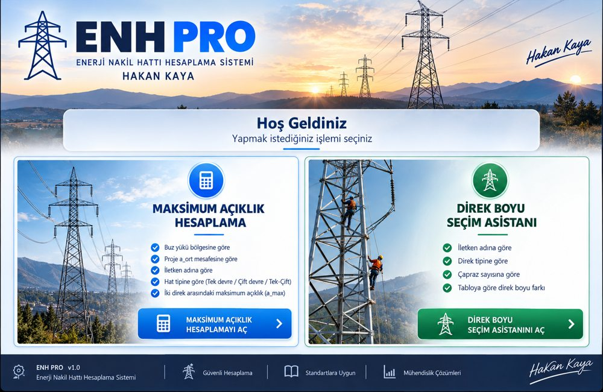

Hoş Geldiniz
Yapmak istediğiniz işlemi seçin
📐 Maksimum Açıklık Hesaplama
Buz yükü, hat tipi ve direk çiftine göre a_max değeri
⚡ Direk Boyu Seçim Asistanı
Direk tipi ve çapraz sayısına göre tablo değeri
Maksimum Açıklık Hesaplama
En Fazla Açıklık Sağlayan Direkler seçeneği, iletken, hat tipi, bölge ve a_ort için direk çiftlerini karşılaştırır.
Hesaplama Sonucu
Hesaplama bekleniyor.
Son Hesaplamalar
Direk Boyu Seçim Asistanı
Yalnızca sağlanan çapraz sayısı tablosu kullanılır.
Hesaplama bekleniyor.
Not: -8, -6, ... +6 değerlerinin gerçek metre karşılığı kaynak tabloda belirtilmediği için sonuç tablo değeri olarak gösterilir.
ENH PRO · Enerji Nakil Hattı Hesaplama Sistemi · HAKAN KAYA